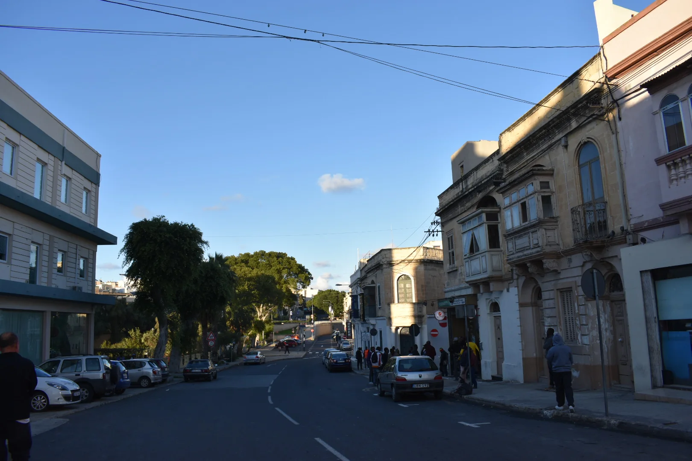

Established streets contain varied building ages and conditions. Confirm the exact frontage, internal light, stairs, street activity, parking rules and present works at the property itself.
MARSA · READ THE EXACT EDGE
Town streets. Port layers.
Marsa brings an established residential town, the inner Grand Harbour’s working edge and a large sports corridor into one locality label. A listing belongs to a precise street within that layered setting—not to every Marsa landmark at once.

ONE NAME, THREE READING CONTEXTS
The street comes before the shorthand.
The Local Council describes Marsa around two inner creeks and the meeting of Wied is-Sewda and Wied il-Kbir. That geography helps explain the town, port and valley systems; it does not make every address waterfront, industrial or beside a sports venue.
Marsa’s port history matters, but it is not a generic harbour-view claim. Check the actual street before drawing conclusions about outlook, air, noise, access or redevelopment.
The SportMalta complex and Marsa Sports Club form a substantial corridor. Their presence does not prove that a home adjoins them or that a particular gate, session or route is available.
Valleys, creeks and roads do not collapse into one walk.
Marsa’s low plain connects major systems, while Qormi, Ħamrun, Floriana and Paola remain separate localities. The guide draws no invented municipal border and gives no straight-line shortcut across port land, water or road infrastructure.
Marsa Local Council geography ↗Construction and completion pages disagree.
The current facility page still says the Marsa Sports Complex is undergoing construction. A SportMalta announcement dated 19 January 2026 says all three phases were completed. Until the exact venue is checked directly, this edition makes no blanket opening or availability statement.
Current facility page ↗OPERATOR-BACKED EXAMPLES
Everyday and activity anchors, without a “best of” list.
These examples add usable context. They are not a complete directory, recommendation or promise of live stock, menus, sessions, prices, opening hours, public access or distance from a listing.
The Convenience Shop
The operator identifies a Marsa outlet at 118 Triq N. Isourd with grocery and household categories. Check present hours, stock, delivery and accessibility directly.
Operator source ↗Marsa Sports Club
The club’s own sports page establishes a multi-discipline venue. Membership, visitor access, bookings, surface availability and current sessions remain operator checks.
Club source ↗Kulu
The club says Kulu has operated its catering since 2020. Treat that as an operator record, not a review or proof of today’s menu, hours, booking availability or public access.
Club catering source ↗Putter’s Inn
The club identifies Putter’s Inn at the Royal Malta Golf Club. Current opening, menu, booking, accessibility and visitor arrangements require a direct check.
Club catering source ↗Public-service and venue details remain current checks.
Primary HealthCare’s Floriana Health Centre page lists Marsa within its catchment. Confirm current services, referrals and hours directly. The SportMalta conflict above also means each facility and session needs its own current confirmation.
No overview line becomes a journey.
This edition draws no municipal boundary, generic walking route, road ETA, bus timetable, taxi price or ferry. Walking geometry, bus schedules, current car-traffic estimates and taxi-price observations are separate sources that require exact endpoints, mode and timestamp. No ferry is assumed for Marsa.
Load Marsa’s town-to-sports context only when needed.
The map provides a broad orientation across the residential town, inner creek edge and sports corridor. It deliberately draws no boundary, property route, water crossing or journey time. OpenStreetMap loads only after your click.
Marsa Local Council · Council geography and history · Primary HealthCare · The Convenience Shop Marsa · SportMalta facility page · SportMalta completion announcement · Marsa Sports Club · Marsa Sports Club catering · Wikimedia Commons image record

Council, Primary HealthCare, retail and Marsa Sports Club sources were rechecked in a public browser. The racing-club page presented a security check, so its racing and Pegasus claims were omitted rather than treated as current evidence. No ranking, permanent opening, property-specific route, guaranteed outlook, parking claim, accessibility promise or journey time is claimed.
Continue with the separate Ħal Luqa neighbourhood edition, or return to all neighbourhoods.